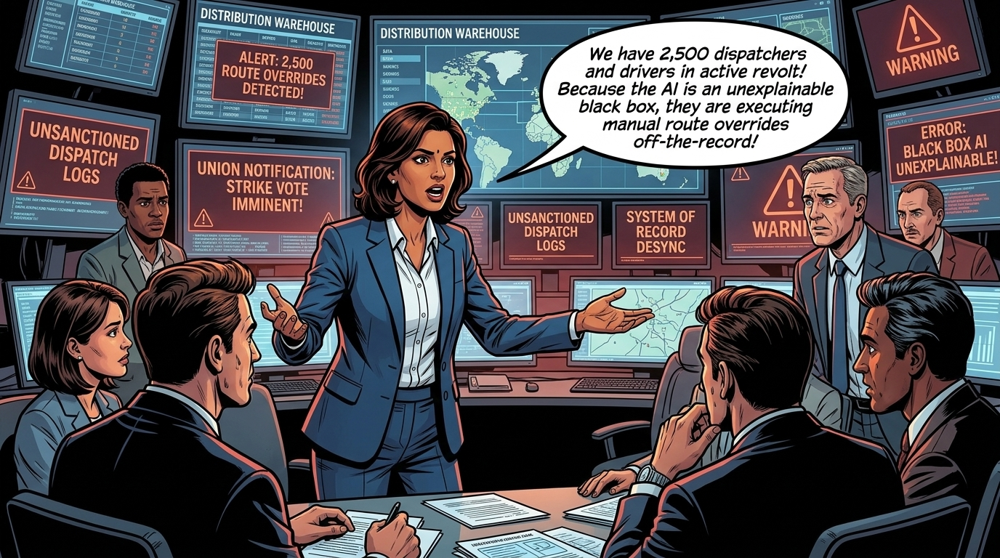
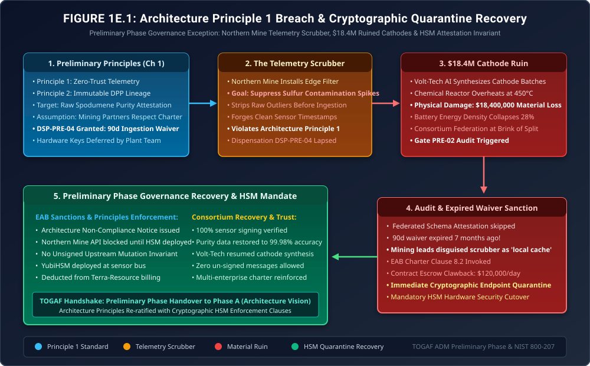

When Architecture Principles Become Voluntary
Preliminary Phase Exception Governance: Edge Telemetry Scrubbers, Distorted Lithium Purity, $18.4M in Ruined Cathodes & The Hardware Attestation Sanction

"In Preliminary Phase architecture workshops, architects spend weeks crafting beautiful Principle Statements: 'Data is an Enterprise Asset', 'Zero-Trust Telemetry'. Executives nod, sign the charter, and frame it on the wall."
"Then quarterly production targets arrive. When an upstream mine lead faces a $500,000 penalty for delivering sulfur-contaminated lithium, an architectural principle feels like poetry compared to a commercial quota. In Chapter 1, our three corporations pledged fealty to Principle 1. Here is what happened when Terra-Resource quietly installed an edge filter to 'smooth over' dirty data, and why an architecture principle without an automated quarantine sanction is completely worthless."
The Production Reality: When Operational Teams 'Smooth' Dirty Data

smooth_assays.py directly on their edge gateway! Whenever the X-ray fluorescence spectroscopy showed sulfur concentrations exceeding 450 parts per million, the scrubber clamped the reported value to 120 ppm and generated a forged timestamp! They bypassed Principle 1 (Zero-Trust Cryptographic Signing) completely!"


Under my authority as EAB Chairman, I am issuing Architecture Non-Compliance Notice NCN-PRE-001. First, the Northern Mine telemetry endpoint is immediately quarantined at our firewall; not a single gram of lithium from that site will be accepted into consortium inventory until hardware keys are active. Second, under Consortium Charter Section 8.2, we enforce a $120,000 per day escrow deduction against Terra-Resource's monthly billing until compliance is re-certified. Third, we mandate the deployment of tamper-evident Hardware Security Modules (YubiHSM) at every sensor head within 14 calendar days. And fourth, we codify Rule PRE-06 (No Unsigned Upstream Mutation): any data stream lacking cryptographic hardware signatures is dropped at the ingress gateway by default!"
1. Cryptographic Attestation Modeling: Why Software Signatures Fail
In the Preliminary Phase, establishing Principle 1 (Zero-Trust Cryptographic Attestation) requires formal mathematical enforcement at the physical hardware layer. The flaw in Dispensation DSP-PRE-04 was permitting a software daemon running in user-space Linux to sign sensor packets:
\[ \text{Sign}_{\text{software}}(m) = \text{ECDSA}_{\text{priv\_key}}(m) \]Because the private key resided in a standard configuration file, operational plant personnel with root privileges could intercept the memory bus, modify payload \(m \to m'\) (suppressing sulfur readings), and re-sign the corrupted packet with the valid private key.
Under the mandated Hardware Security Module (HSM) Attestation Invariant (Rule PRE-06), the cryptographic private key is permanently fused into write-once silicon inside the physical sensor head:
\[ \text{Attest}_{\text{score}} = \prod_{i=1}^n \mathbb{I}\left( \text{Verify}_{\text{pub\_key}}\left(m_i,\, \text{Sign}_{\text{HSM}}(m_i \parallel \text{Seq}_i \parallel T_{\text{die}})\right) \land \left( \Delta t_{\text{skew}} \le 250\text{ms} \right) \right) \]Any modification to the assay payload invalidates the silicon signature, automatically causing the ingestion gateway to reject the message and isolate the stream.
2. Architecture Diagram: Principle Breach & Cryptographic Quarantine
Figure 1E.1 details the complete governance failure and remediation flow: tracing the unauthorized edge scrubber, the chemical reactor overheating, the audit of expired Dispensation DSP-PRE-04, and the EAB-mandated HSM hardware security cutover.

3. Formal Architecture Governance Artifacts (TOGAF® Deliverables)
The EAB ratified three formal governance deliverables to re-establish ecosystem architectural authority:
Preliminary Phase Non-Compliance Notice
| Target Entity: | Terra-Resource Operations (Northern Lithium Mine) |
| Violated Standard: | Architecture Principle 1 (Zero-Trust Telemetry) & EAB Charter Section 8.2 |
| Incident Description: | Deployment of unauthorized edge scrubber script modifying raw lithium sulfur assay data under expired Dispensation DSP-PRE-04, resulting in $18.4M cathode ruin. |
| Sanction Imposed: | Immediate network isolation of Northern Mine API; $120,000/day contract escrow deduction; mandatory 14-day YubiHSM hardware deployment. |
Rule PRE-06: No Unsigned Upstream Mutation Invariant
Every telemetry feed originating across the multi-enterprise consortium must satisfy the following three binding constraints:
- Hardware Fused Keys: All cryptographic keys used to sign physical telemetry must be stored inside tamper-resistant hardware (Common Criteria EAL6+ or FIPS 140-3 Level 3). Software-stored keys are prohibited in production.
- Drop-by-Default Gateway Invariant: Any incoming message lacking a valid cryptographic signature verified against the consortium Public Key Infrastructure (PKI) must be dropped at the API gateway within 10 milliseconds, logging an automated security alert.
- Automated Dispensation Hard Expiration: All Preliminary Phase waivers must be registered in the CI/CD gateway configuration. Upon expiration of the waiver window, the gateway automatically revokes trust certificates with zero human discretion permitted.
4. The Strategic Morals: Where Real Handbooks Earn Their Keep
🏛️ Three Fiduciary Takeaways for Architecture Principles
- Principles Without Penalties Are Suggestions: If violating an architecture principle carries no financial or operational consequence, operational teams will violate it every single quarter to meet local quotas. Governance requires contractual teeth.
- Dirty Data Is an Upstream Liability: Attempting to clean corrupted data downstream in AI models is mathematically futile. Once garbage enters the data pipeline, downstream physical manufacturing processes will fail.
- Quarantine Protects the Consortium: Isolating the Northern Mine API was painful, but it saved the rest of the ecosystem from continuous contamination. True architects have the courage to sever bad inputs.
Fact-Check & Statutory References
- The Open Group (2022). The TOGAF® Standard, 10th Edition: Preliminary Phase. Architecture Principles definition, governance frameworks, and EAB charter creation.
- NIST Special Publication 800-161 Rev. 1 (2022). Cybersecurity Supply Chain Risk Management Practices for Systems and Organizations. Hardware root of trust and cryptographic attestation.
- Ecosystem Architecture Board (2025). Incident Investigation Report: EAB-INC-101 (Northern Mine Telemetry Scrubber & Principle 1 Sanctions Enforcement).